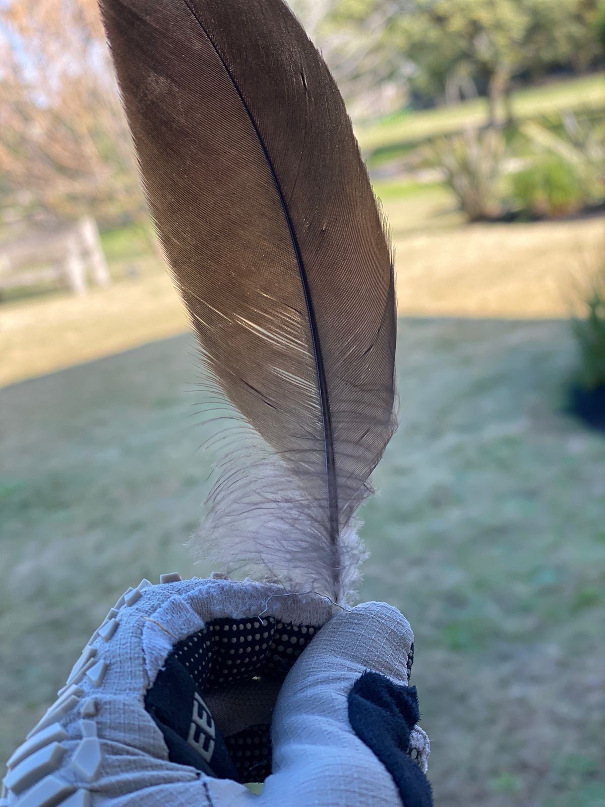
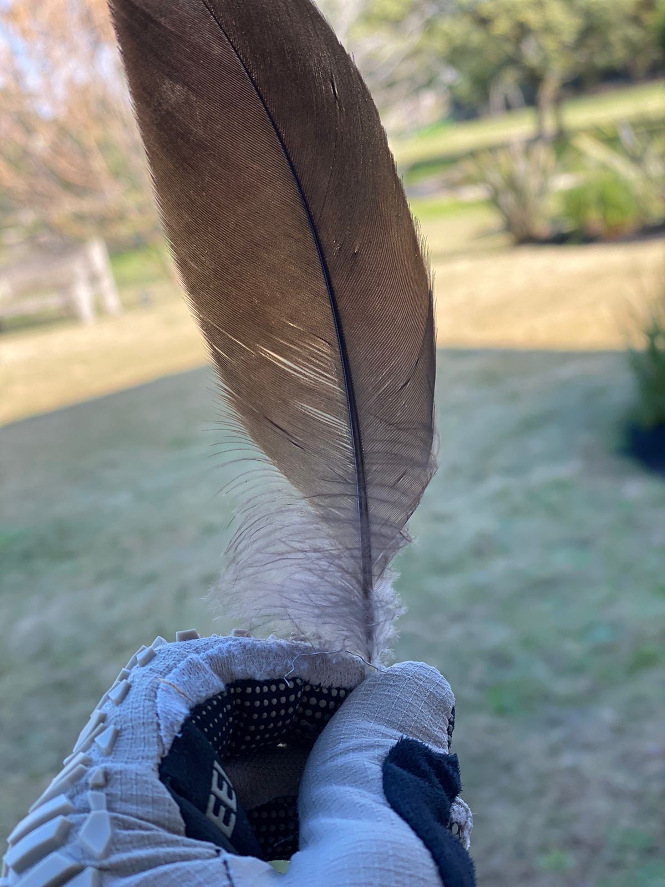

Recién estoy armando mi portfolio les comparto algunas cosas de años atras que he hecho y las que voy realizando con las prácticas del estudio

Diseño para la empresa Cerramientos Cabildo

Diseño para estudio de Abogados

Diseño para empresa textil

Diseño para estudio Yoga

Primera entrega de Challenger con javascript

 
